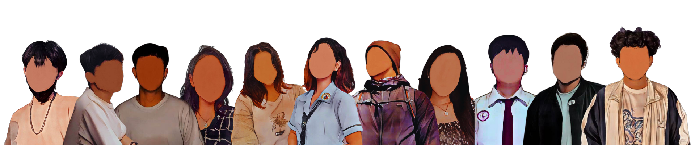

PLP - - MERCH
Thank you for choosing PLP MERCH as your go-to source for all your PLP merchandise needs. Together, let's celebrate our university and create lasting memories!
Warm regards,
PLP MERCHANTS
Founder, PLP MERCH

About PLP MERCH
Welcome to PLP MERCH, your ultimate destination for high-quality and unique university merchandise. We are passionate about fostering pride and connection among students, alumni, and any member of PLP (Pamantasan ng Lungsod ng Pasig). As a 2nd-year BSIT student in PLP, We have always felt a deep sense of pride and belonging in our institution. That's why we founded PLP MERCH with the goal of providing merchandise that reflects our shared experiences and celebrates our university spirit.Our Products
At PLP MERCH, we offer a wide range of carefully curated products that showcase our PLP pride. From stylish keychains and trendy tote bags to eye-catching stickers and button pins, our merchandise is designed to help you display your affiliation with style and elegance. Each product is crafted with meticulous attention to detail and high-quality materials to ensure longevity and durability. We believe that by offering products of exceptional quality, we can contribute to the creation of cherished memories and lasting connections.Our Goal
Our primary goal is to create a sense of unity and camaraderie among PLP students, alumni, and supporters. We want to give you the opportunity to showcase your PLP pride in a way that is stylish, unique, and representative of our shared experiences. By wearing or using our PLP MERCH products, we hope you feel a sense of belonging and connection to the larger PLP community. Whether you're on campus, at a reunion, or simply going about your daily life, we want our merchandise to serve as a reminder of the incredible memories and friendships forged during your time at PLP.Join the PLP MERCH Community
We invite you to explore our collection of PLP merchandise and find the perfect items that resonate with you. By making a purchase, you not only support our business but also become a part of the growing PLP MERCH community. Connect with us on social media to stay updated on new product launches, special promotions, and exciting PLP events. We love hearing from our customers, so feel free to reach out to us with any questions, suggestions, or feedback you may have. Your satisfaction and involvement mean the world to us.Thank you for choosing PLP MERCH as your go-to source for all your PLP merchandise needs. Together, let's celebrate our university and create lasting memories!
Warm regards,
PLP MERCHANTS
Founder, PLP MERCH